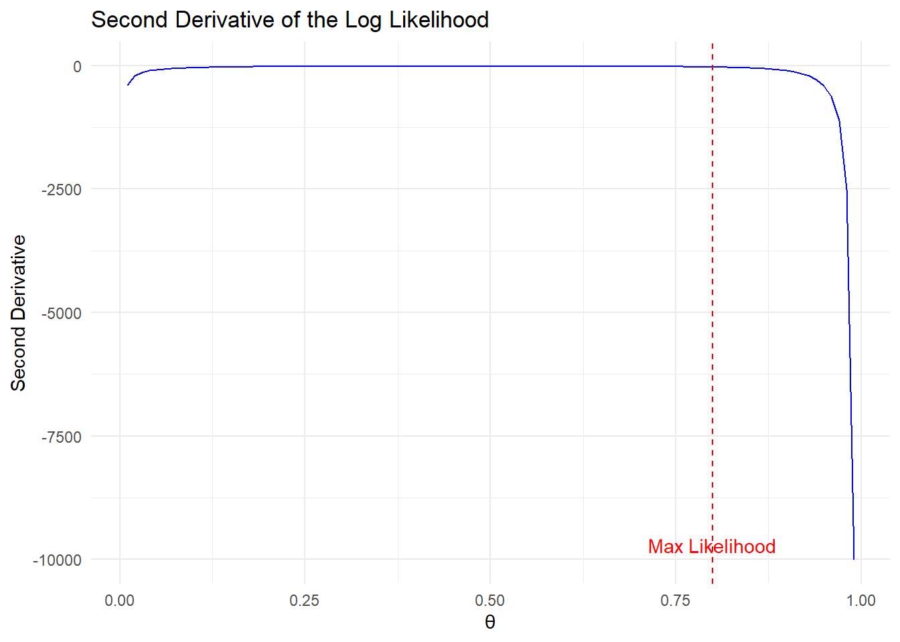

library(tidyverse)Warning: Paket 'stringr' wurde unter R Version 4.4.1 erstellt── Attaching core tidyverse packages ──────────────────────── tidyverse 2.0.0 ──
✔ dplyr 1.1.4 ✔ readr 2.1.5
✔ forcats 1.0.0 ✔ stringr 1.5.1
✔ ggplot2 3.5.1 ✔ tibble 3.2.1
✔ lubridate 1.9.3 ✔ tidyr 1.3.1
✔ purrr 1.0.2
── Conflicts ────────────────────────────────────────── tidyverse_conflicts() ──
✖ dplyr::filter() masks stats::filter()
✖ dplyr::lag() masks stats::lag()
ℹ Use the conflicted package (<http://conflicted.r-lib.org/>) to force all conflicts to become errorslibrary(knitr)
# Define the second derivative function
sec_dev <- function(theta) {
return(-4 / theta - 1 / (1 - theta)^2)
}
# Generate theta values
theta_values <- seq(0.01, 0.99, by = 0.01)
# Calculate second derivative for each theta
second_derivative_values <- sapply(theta_values, sec_dev)
# Create data frame
data <- tibble(theta = theta_values, second_derivative = second_derivative_values)
# Maximum likelihood estimate for binomial distribution with n = 5 and x = 4
theta_mle <- 4 / 5
# Plot the second derivative and highlight the maximum likelihood
ggplot(data, aes(x = theta, y = second_derivative)) +
geom_line(color = "blue") +
geom_vline(xintercept = theta_mle, linetype = "dashed", color = "red") + # Highlight the maximum likelihood value
annotate("text", x = theta_mle, y = min(second_derivative_values), label = "Max Likelihood", color = "red", vjust = -0.5) +
labs(title = "Second Derivative of the Log Likelihood", x = "θ", y = "Second Derivative") +
theme_minimal()